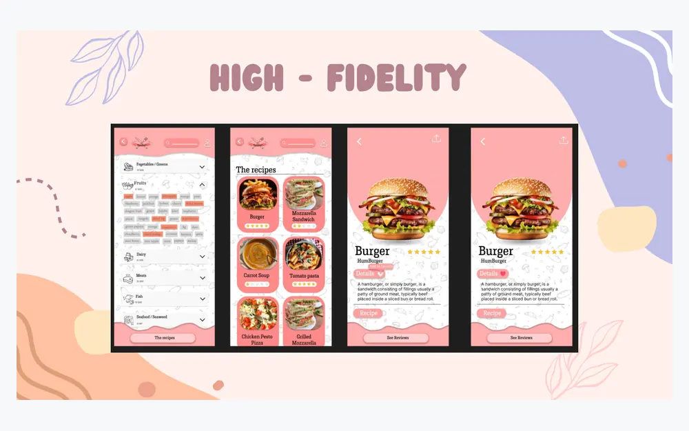

01
UX/UI Design · User Research
The Ingredients App — UX/UI Design & User Research
Research into how users find recipes from the ingredients they already have, taken through user flows, wireframes, Figma prototypes and usability testing.